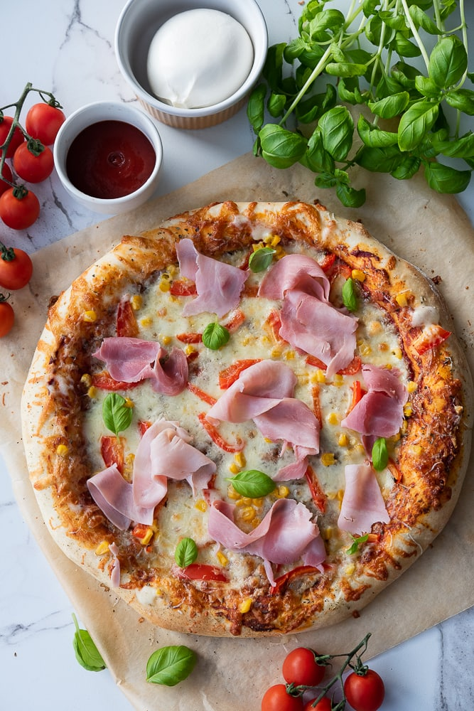

Witajcie na Smakowitych Odkryciach – magicznym miejscu, gdzie zanurzycie się w fascynującym świecie kulinarnych eksploracji! Nasza pasja do jedzenia, gotowania i podróżowania sprawia, że ten blog kulinarny to nie tylko zbiór przepisów, ale prawdziwa podróż po smaku, aromacie i historii każdej potrawy. Przywitajcie się z nami w kulinarnej odysei, która rozkwita smakiem, inspiracją i niekończącą się radością z odkrywania.
Smakowite Odkrycia to nie tylko zespół entuzjastów, to społeczność ludzi, którzy łączą swoją miłość do jedzenia i gotowania w niepowtarzalny sposób. Nasze artykuły nie tylko przekazują przepisy – opowiadają historie o tle kulturowym, ciekawostki dotyczące składników, oraz dzielą się kulinarznymi doświadczeniami z różnych zakątków świata.
Niezależnie od tego, czy jesteś doświadczonym kucharzem, czy dopiero zaczynasz swoją kulinarną przygodę, Smakowite Odkrycia są dla Ciebie. W naszym kulinarnym świecie znajdziesz nie tylko pomysły na obiady czy deser, ale również wskazówki dotyczące technik gotowania . To miejsce, gdzie spotyka się sztuka gotowania z pasją do podróży smakowych.
Każdy przepis, który prezentujemy, jest wynikiem eksperymentów i poszukiwań najwyższej jakości składników. Podążamy za najnowszymi trendami, odkrywamy lokalne delikatesy i chętnie dzielimy się naszymi odkryciami z Wami. Smakowite Odkrycia to nie tylko blog kulinarny, to wspólnota ludzi, którzy łączą się poprzez miłość do jedzenia i gotowania.
Dołączcie do naszej społeczności, aby razem czerpać radość z kulinarnego tworzenia, dzielić się smakowitymi doświadczeniami i inspirować się nawzajem. Przekroczcie próg naszej wirtualnej kuchni i razem odkrywajmy smakowe horyzonty, inspirując się nawzajem do niekończących się kulinarnych przygód! Gotowi na smakowite odkrycia?